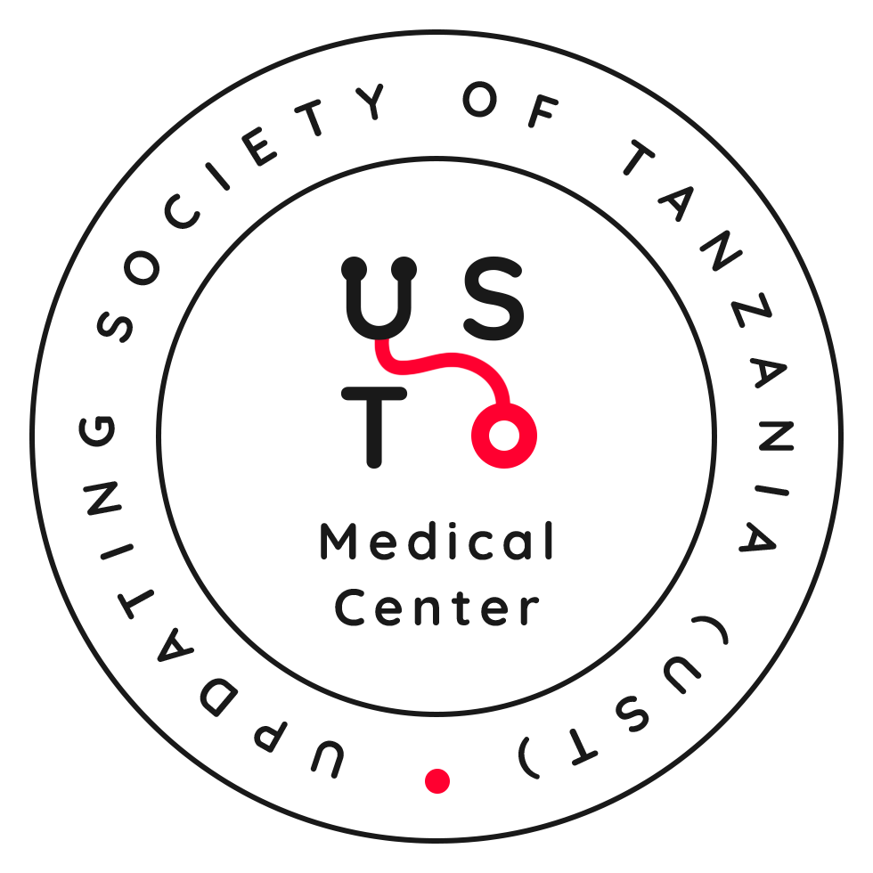

UST Medical CenterThe Part Time Laboratory Technologist will be responsible for Sunday routine operations of the medical lab and monitor the supply chain of essential commodities. Oversee Infection Prevention and Control (IPC).
Send your CV to:
Reports to: Facility in charge | Part-time (Sunday only)
Medical doctor & public health informatician (Africa CDC) seeks tech co-founder to build context-aware health tech solving real challenges in Tanzania & Africa.
Background in Data Science/ML/AI, software engineering, robotics/automation, or health informatics.
This opportunity is now closed. Thank you to all who applied.
✅ Partnership / co-founder opportunity | Shared ownership | Early-stage idea→pilot→scale.
❌ Not a traditional salaried job or short-term consulting.
 Chat with us!
Chat with us!